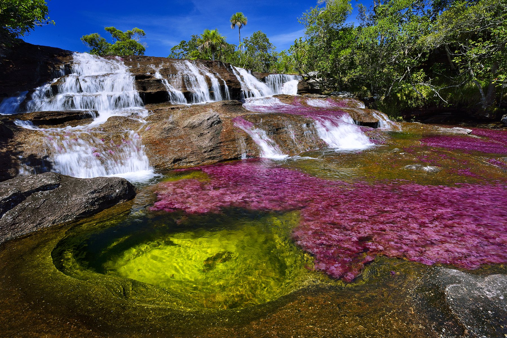

Tras la revisión y análisis respectivo de diversas fuentes, se ha llegado a la conclusión que
el sector turismo en el país, ha sido fuertemente golpeado y desvalorizado, debido a
múltiples factores que impactan negativamente al turista, tales como: fraude en reservación
de vuelos y hospedaje, sobreprecios y engaño en varias modalidades.
Fraude en compra y reservación de paquetes turísticos:Tras la pandemia y según
información . la revista “Semana”, se disparó esta problemática en agencias no
reconocidas por la ley y que afectan principalmente a personas de bajos recursos que en
busca de “viajes baratos”, caen en las redes inescrupulosas de estas empresas, disfrazadas
en “bajos precios” e increíbles propuestas promocionadas en redes sociales que tienen
como única finalidad robar al cliente.
Especulación y estafa: Según noticias y artículos informativos de “caracol TV”, este
fenómenos, se presenta con mayor concentración en destinos de la costa caribe nacional,
es el caso de ciudades como santa Marta y cartagena, en esta última, hace pocos meses se
dió a conocer un famoso caso donde dos visitantes extranjeros de procedencia ecuatoriana,
fueron víctimas de la especulación y los sobreprecios debido a que en el balneario donde se
encontraban pagaron una cifra aproximada de dos millones de pesos por dos almuerzos
básicos que según un balance no ascendían a los cien mil pesos en una facturación regular;
lo anteriormente mencionado, expone claramente la existencia de esta modalidad de estafa,
evidenciando que el turista es víctima de engaño por parte de vendedores y proveedores de
servicios en diversos atractivo y sitios de interés mediante sobreprecios o abusos en las
tarifas de paquetes y servicios, tergiversando con ello la imagen del sector y perjudicando
seriamente el bolsillo de los visitantes.
Cifras del periodico “El país” reflejan que la problemática de estafa y fraude financiero a
turistas locales e internacionales en Colombia, en el caso puntual de la reserva de tiquetes
aéreos durante el año 2017 ascendieron al 22%
Por ello Basándonos en las cifras anteriormente mencionadas de engaño al receptor de
servicios turísticos, es urgente defender al turista y ayudarlo a prevenir caer en estas
trampas, mejorando la imagen del turismo en Colombia y haciendo más agradable la
experiencia del viajero
Solucion a estas problematicas
● Informar al turista nacional sobre potenciales riesgos que puede tener en determinados destinos y atractivos del país o en sus diversas ciudades (en cuanto a su economía se refiere). Mediante el uso de herramientas tecnológicas, tales como una aplicación móvil o un blog online.
● Implementar en las herramientas virtuales, un anexo con tarifas y estándares de precios regionales y locales, para productos de usual demanda en el turista, previniendo a este de estafas o engaños.
● Proporcionar al cliente la posibilidad de denunciar y dar crítica sobre su experiencia y los lugares que visitó, teniendo así mayor interacción con la página web y facilitando a otros usuarios su vivencia
Atractivos turisticos que podrias Visitar Parque Nacional de colombia Tayrona
El parque nacional natural Tayrona se encuentra ubicado en las estribaciones de la Sierra Nevada de Santa Marta en el Caribe de Colombia. Su superficie hace parte de la ciudad de Santa Marta. A 34 km del centro urbano de Santa Marta es uno de los parques naturales más importantes de Colombia. Es hábitat de una gran cantidad de especies que se distribuyen en regiones con diferentes pisos térmicos que van desde el nivel del mar hasta alturas de 900 m. De las 15.000 hectáreas que conforman el parque, 3.000 son área marina.
Islas del Rosario
Si lo que buscas es fiesta y diversión, esta isla es tu mejor opción. Isla Cholón es muy conocida por ser el lugar perfecto para las fiestas; cada año, cientos de turistas viajan a esta hermosa isla para disfrutar de la mejor comida de mar y un ambiente festivo vibrante.
Caño de cristales

Llamado por el periodista Andrés Hurtado como “el río que se escapó del Paraíso”, Caño Cristales ha sido reseñado hasta en la Revista National Geographic por una singular característica: sus aguas se tiñen de fucsia y a lo largo de su recorrido se pueden ver también el rojo, el azul, el negro y el amarillo.
Islas San andres y Provivencia
Te recomiendo vayas a Providencia. San Andrés tiene pocas playas, las que son lindas, pero con mucha gente. Es una ciudad desordenada, sin mucho atractivo; tierra adentro, la isla tampoco ofrece demasiado. En cambio Providencia es otro mundo. el clima fue muy bueno, las playas manzanillo o Agua dulce, recomendables. El agua cálida, transparente. La gente amable. Puedes hacer una excursión o caminatas al pico más alto de la isla. Definitivamente Providencia. Consejo: ten cuidado con el agua de bebida, asegúrate que sea de buena calidad. Puedes conseguir con tiempo pasajes muy económicos en avión